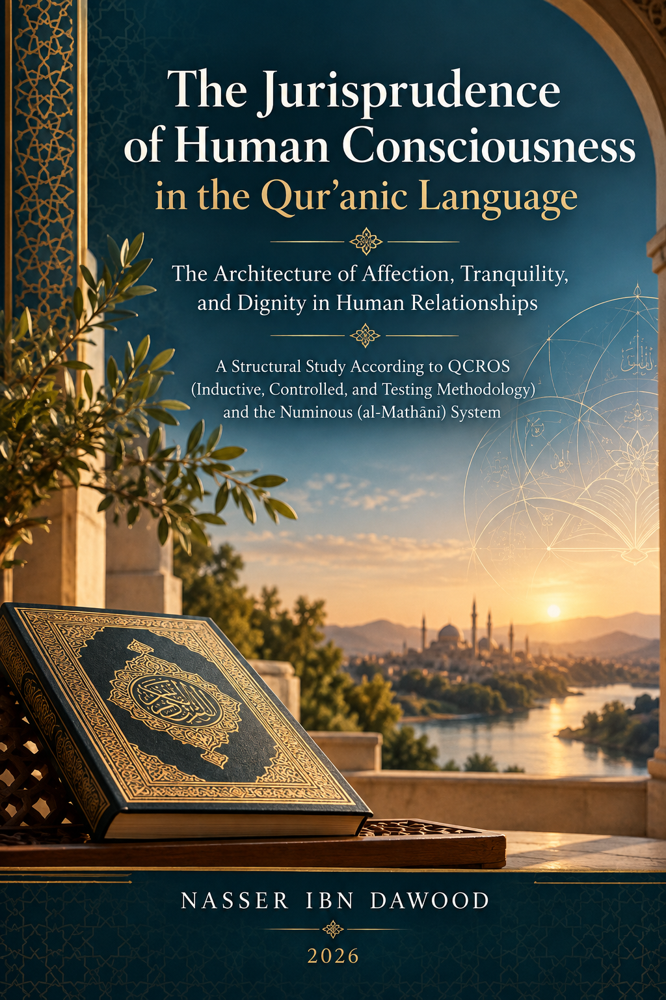

114. The Jurisprudence of Human Consciousness in the Qur’anic Language

The architecture of affection, tranquility, and dignity in human relationships: a structural study using QCROS and the Mathani system, presenting testable models rather than final Qur’anic laws.
قراءة PDF داخل الموقع / Read the PDF on this website
جارٍ تجهيز القارئ… / Preparing the reader…
Book Summary, Table of Contents & Excerpt
THE JURISPRUDENCE OF HUMAN CONSCIOUSNESS
IN THE QUR’ANIC LANGUAGE
The Architecture of Affection, Tranquility, and Dignity
in Human Relationships
A Structural Study According to QCROS
(Induction, Control, and Testing) and the Mathani System
NASSER IBN DAWOOD
2026
Condensed Conceptual English Edition
I. The Global Knowledge Manifesto
Knowledge is a universal right. The author firmly believes that wisdom should not be locked behind paywalls or language barriers.
Global Access Policy: All books in this library are available for free in multiple digital formats (PDF, HTML, DOCX, TXT).
The Digital Library: As of early 2026, the collection hosts 68 volumes (34 in Arabic and 34 in English), fully optimized for AI-assisted research and digital archiving.
Official Platforms: Main Website: nasserhabitat.github.io/nasser-books/
GitHub: nasserhabitat/nasser-books
This manifesto is reproduced here as supplied by the author for this condensed edition.
II. Translator’s Note: The Bridge of Meaning
This English edition is a condensed conceptual adaptation. It is not a word-for-word translation, but rather an "extraction of essence." It presents the core philosophical framework in accessible English, omitting the exhaustive linguistic debates and classical references found in the original Arabic text.
For the academic researcher: The original Arabic version remains the primary source for comprehensive linguistic analysis, detailed exegesis (Tafsir), and the complete bibliography.
This adaptation also preserves the methodological status of the Arabic edition. A claim marked OPEN remains open; a CANDIDATE remains a candidate; a RESISTED or STRONGLY RESISTED claim is not revived through simplification; and a CLOSED result remains closed only within its declared scope. The aim is clarity without scientific inflation.
Key Qur’anic terms are sometimes retained in transliteration—such as nafs, tawaffī, barzakh, and baʿth—when a single English equivalent would prematurely narrow the field under study.
How to Read This Condensed Edition
This book is not designed to deliver conclusions without showing the route by which they were reached. Its operating sequence is: READ → COLLECT → COMPARE → HYPOTHESIZE → TEST → JUDGE → CONTINUE. The reader is therefore invited to distinguish evidence from observation, interpretation, hypothesis, result, model, and law.
• Co-occurrence is not causality. Two terms appearing together do not prove that one causes the other.
• Textual order is not automatically a universal chronological or developmental sequence.
• A necessary condition is not automatically a sufficient cause.
• A previous volume may generate questions or methods, but it is not evidence for a new corpus.
• A model or diagram represents established relations; it does not create new evidence.
• OPEN does not mean false. NOT ESTABLISHED does not mean nonexistent. CANDIDATE does not mean canonical.
• No claim may rise above the weakest unresolved dimension on which it depends.
Core rule: Evidence → Record → Model, not Model → selective evidence.
Executive Summary
This study begins with a deceptively simple question: how does the Qur’an present the human being inside a relationship? The question quickly becomes linguistic, structural, ethical, and civilizational. The book does not assume that “wijdān” (human affect, inward experience, or consciousness) is a complete Qur’anic technical term. Instead, it uses the expression Fiqh al-Wijdan as an analytical container through which a network of Qur’anic terms can be tested: love, affection, tranquility, mercy, fear, grief, aversion, contentment, speech, will, mutual consent, covenant, balance, equity, justice, protection, proof, and dignity.
The inquiry moves through six interconnected parts. It first constructs the textual corpus and separates Qur’anic terms from modern analytical categories. It then studies the human agent inside the relationship, especially women as speakers, decision-makers, complainants, negotiators, and moral agents. Next it investigates balance, deprivation, short-measure, equity, and justice. It then turns to sexual boundaries, accusation, proof, rumor, privacy, verification, backbiting, and social dignity. The fifth part synthesizes these results into a model of affective dignity. The final part asks how textual findings may responsibly inspire family, institutional, educational, and civic models without converting human policy into sacred revelation.
The principal achievement is therefore not a final dictionary definition of “human consciousness,” nor a universal closed law. It is a disciplined map of relations: feeling is not behavior; an act is not an accusation; accusation is not proof; protection is not confiscation of agency; functional difference is not automatically difference in human worth; and a human operating model is not the Qur’anic text itself.
AFFECTIVE DIGNITY MODEL = CANDIDATE STRONG, not a final sealed Qur’anic law.
Introduction — From Jurisprudence of Rules to Jurisprudence of Human Consciousness
The Qur’an does not address the human being merely as a body around which rules move, nor only as a legal party defined by contracts, duties, and entitlements. Its discourse also addresses a being who loves and dislikes, fears and grieves, hopes and becomes tranquil, accepts and resists, reconciles and separates, forgives and withholds. This study therefore asks what becomes visible when human relationships are read not only through legal procedure, but through the architecture that makes law livable within a person endowed with inward experience, dignity, will, and responsibility.